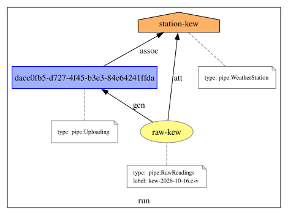
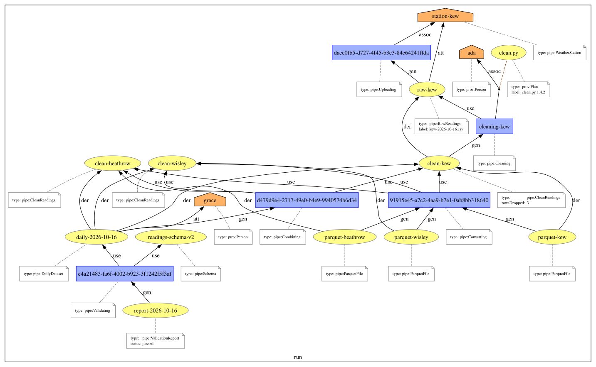

This primer introduces provenance templates through an example: the nightly pipeline of a weather institute, which uploads, cleans, combines, converts and validates files of readings. Step by step, it shows how to write a template for each step, how to supply its bindings, what instantiation produces, how variables with several values and linked variables behave, how statements are left out, how the instantiated documents of a run are merged, and how a bindings schema and a template transformation file describe and automate the whole. Every example in this document was produced by ProvToolbox [[PROVTOOLBOX]] from the files that accompany it.
This is an unofficial draft, part of the PROV-TEMPLATE family of documents [[PROV-TEMPLATE-OVERVIEW]]. It is not normative: the formats are specified in [[PROV-TEMPLATE]] and the algorithms in [[PROV-TEMPLATE-ALGORITHMS]].
A weather institute receives, every night, a file of readings from each of its weather stations. A pipeline processes the files: each uploaded file is cleaned by a script, the cleaned files of the day are combined into a daily dataset, they are also converted to a columnar format for archiving, and the daily dataset is validated against a schema before a curator approves it for publication. The institute wants the provenance of every published dataset: which files it came from, which station produced them, which version of the cleaning script ran, who approved it.
Writing this provenance directly in the pipeline's code would be tedious, and the result hard to review: the shape of the provenance would be scattered across five programs. Instead, we write one template per step, a PROV document that describes the provenance of the step once, with variables where the values change from one run to the next. Each step of the pipeline then only records the values of the variables — the bindings — and the provenance is obtained by instantiating the template with the bindings.
We assume the reader is familiar with PROV [[PROV-PRIMER]] and its notation PROV-N [[PROV-N]], in which all templates of this primer are written. Templates can equally be written in any other serialization of PROV, for instance PROV-JSONLD [[PROV-JSONLD]].
The files of this primer are in the examples directory: the templates in templates, the bindings in bindings, the template transformation file pipeline-ttf.json that runs them, and the documents it produced in run.
When a station uploads its file, we want to record that the file was generated by an uploading activity, associated with the station, and that the file is attributed to the station. The template below says exactly that.
Four things distinguish this template from an ordinary PROV document.
var: (http://openprovenance.org/var#) are
variables: var:file, var:station, var:filename,
var:time. They are placeholders, to be replaced by values.
vargen:
(http://openprovenance.org/vargen#) are variables too, but if no value is supplied for them,
the instantiation generates one. The uploading activity has no natural identifier in the
pipeline, so we let the instantiation generate it: vargen:uploading.
prov:label and as the activity's start time,
because PROV requires a label to be a string and a time to be a date and time, not a variable. Instead,
the template uses the attributes tmpl:label and tmpl:startTime of the template
vocabulary, whose values are variables; instantiation turns them into a prov:label and a
start time.
vargen:bundle. A template contains one bundle, whose
identifier is itself a variable.
The bindings for the Kew station's upload are written in JSON. The context declares the
prefixes the values use; var gives, for each variable, an array of values. A value that is a
qualified name is written {"@id": ...}; a literal value is written
{"@value": ..., "@type": ...}, nested in an extra array, for reasons that
explains. Finally vargen gives a value to the bundle: every step
of the night's run will put its provenance in the same bundle, ex:run.
Instantiating the template with these bindings produces the following PROV document.
Each variable has been replaced by its value; the label and the start time are now PROV's own. The
activity, left unbound, received a fresh identifier in the uuid: namespace
(urn:uuid:), the same in every statement where vargen:uploading occurs. No
variable and no tmpl: attribute is left: the result is an ordinary PROV document.

The cleaning step is the archetype of a transformation: an activity uses a file and generates a new file derived from it. The activity is associated with the operator who ran it, and with a plan, the cleaning script.
Two new features appear.
pipe:rowsDropped = 'var:dropped'
records how many malformed rows the script dropped, a number the pipeline knows only at run time. Its
binding is a typed literal, an xsd:int.
var: variable, not a vargen: one: the
pipeline names its activities, and the provenance should use the same name. Similarly, the plan of the
association is the variable var:script.
The combining step uses all the cleaned files of the night, however many stations reported. A template cannot know their number in advance, so a variable may be bound to several values. The template is written for one input file:
and the bindings give three values to var:input:
Every statement in which var:input occurs is instantiated once per value: three entities,
three usages, three derivations. The statements in which it does not occur are instantiated once.
This explains the extra array around literal values in the bindings. A variable that is an identifier,
such as var:input, is bound to an array with one value per instance. A variable that is the
value of an attribute is bound to an array with one entry per instance of its statement, and each
entry is itself an array, because PROV allows an attribute to occur several times in a statement: an
entity may carry two labels, or a file two types.
The conversion step converts each cleaned file into a Parquet file. Its template looks like the combining
one, with a var:output where combining had a single dataset:
Both var:input and var:output are bound to three values, in the same order:
The instantiation is not what we intended:
There are nine derivations: each Parquet file is said to be derived from each of the three cleaned files.
By default, the variables of a statement change value independently of each other, so a statement with two
variables bound to three values each is instantiated for every combination of their values, the Cartesian
product. Here, the i-th output is derived from the i-th input only: the two variables should change value
in step. This is declared with the attribute tmpl:linked, on the statement whose
identifier is one of the variables:
Now there are three derivations. Linked variables must be bound to the same number of values. The link can
also be declared in the bindings rather than in the template, with
"linked": {"output": "input"}, when it is a property of a particular use of the template
rather than of the template itself.
The validation step checks the daily dataset against a schema and produces a report. When the validation passes, a curator approves the dataset, and the approval is recorded as an attribution of the dataset to the curator. On some nights no curator is on duty and the dataset waits; the provenance must not invent an approval.
With a curator, the bindings give a value to var:curator, and the instantiation contains the
curator and the approval:
Without a curator, the bindings simply leave var:curator out. An entity, activity or agent
whose identifier is an unbound var: variable is left out of the instantiated document, and so
is an attribution or an association whose agent is unbound:
An unbound var: variable in an optional position of a statement, such as the plan of an
association, becomes -, and an attribute whose value is an unbound variable is dropped. The
rules for every kind of statement are given in [[PROV-TEMPLATE-ALGORITHMS]], which also describes the
attributes tmpl:if and tmpl:notif that make a statement explicitly conditional on
a variable.
Each step's instantiation is a PROV document of its own. The provenance of the night's run is obtained by
merging them. Merging identifies the entities, activities and agents that have the same
identifier — the cleaned file ex:clean-kew, generated by the cleaning and used by the
combining and the converting — and merges bundles that have the same identifier: all our bindings put
the provenance in the bundle ex:run.

Merge applies to templates too. Since variables are qualified names, two templates that use the same variable describe the same node: merging them composes a larger template. Most templates of the library [[PROV-TEMPLATE-LIBRARY]] are built this way, from smaller ones.
The pipeline's developers need to know, for each template, which variables to supply, of which type, and
which are compulsory. A bindings schema says so. It has the shape of a set of bindings, but each
variable is described rather than given a value: "@id": "ex:*" stands for any qualified name in
the ex namespace, "@value": "*" for any literal of the given type, and each variable
has documentation, an example (@examplar), and whether it is an input the application must
supply (compulsory, optional) or an output the provenance creates.
A bindings schema is the contract between the pipeline and the template. It is used to check bindings, to document the template, and by a template compiler to generate, in the pipeline's own programming language, code that builds bindings — or compact records of them, which can be logged cheaply and turned into provenance later. Bindings schemas are specified in [[PROV-TEMPLATE]].
All the documents of this primer were produced by one template transformation file (TTF). It says where to find the templates and the bindings, where to write the outputs, and lists the tasks: seven instantiations and one merge. Templates are named by identifiers, which an index maps to files; each output is written in the formats listed, its JSON-LD checked against the PROV-JSONLD schema, and the provenance of the task itself recorded.
It is executed by ProvToolbox's prov-template-process, from the examples directory:
prov-template-process . . -configs pipeline-ttf.json
Each task leaves a record of what it did, written with the template-management templates of the library: which document was produced, from which template and which bindings, and when.
Template transformation files are specified in [[PROV-TEMPLATE]]; the executables and the Maven plugin that run them are described there, non-normatively.
fs family
already describes the transformation, filtering, splitting and merging of files, and its generic
family the shapes of transformations from which they derive.
tmpl: vocabulary, bindings, bindings
schemas and template transformation files, read [[PROV-TEMPLATE]].